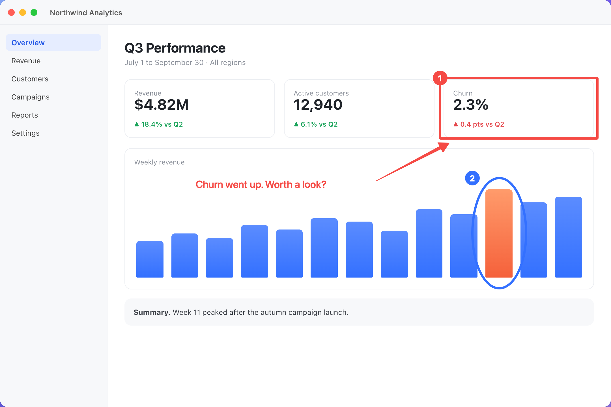

Screenshots for you and your agent
Press ⌘⇧A to grab, mark up and pin. Your agent runs snip to do the same.
You ⌘⇧A
Your agent snip
agent
$ snip shot --app Analytics -o shot.png /tmp/shot.png $ snip ocr shot.png --json | grep Churn {"text":"Churn","box":[1601,320,72,22]} $ snip mark shot.png --box 1556,276,556,214 --step … $ snip pin shot.marked.png ✓
